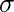
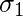
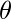
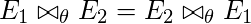
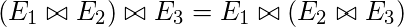
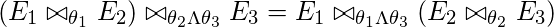
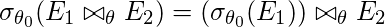
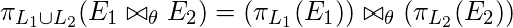
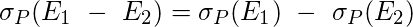
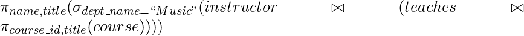

Query: A query is a request for information from a database.
Query Plans: A query plan (or query execution plan) is an ordered set of steps used to access data in a SQL relational database management system.
Query Optimization: A single query can be executed through different algorithms or re-written in different forms and structures. Hence, the question of query optimization comes into the picture – Which of these forms or pathways is the most optimal? The query optimizer attempts to determine the most efficient way to execute a given query by considering the possible query plans.
Importance: The goal of query optimization is to reduce the system resources required to fulfill a query, and ultimately provide the user with the correct result set faster.
- First, it provides the user with faster results, which makes the application seem faster to the user.
- Secondly, it allows the system to service more queries in the same amount of time, because each request takes less time than unoptimized queries.
- Thirdly, query optimization ultimately reduces the amount of wear on the hardware (e.g. disk drives), and allows the server to run more efficiently (e.g. lower power consumption, less memory usage).
There are broadly two ways a query can be optimized:
- Analyze and transform equivalent relational expressions: Try to minimize the tuple and column counts of the intermediate and final query processes (discussed here).
- Using different algorithms for each operation: These underlying algorithms determine how tuples are accessed from the data structures they are stored in, indexing, hashing, data retrieval and hence influence the number of disk and block accesses (discussed in query processing).
Analyze and transform equivalent relational expressions
Here, we shall talk about generating minimal equivalent expressions. To analyze equivalent expression, listed are a set of equivalence rules. These generate equivalent expressions for a query written in relational algebra. To optimize a query, we must convert the query into its equivalent form as long as an equivalence rule is satisfied.
- Conjunctive selection operations can be written as a sequence of individual selections. This is called a sigma-cascade.

Explanation: Applying condition
 intersection
intersection  is expensive. Instead, filter out tuples satisfying condition (inner selection) and then apply condition (outer selection) to the then resulting fewer tuples. This leaves us with less tuples to process the second time. This can be extended for two or more intersecting selections. Since we are breaking a single condition into a series of selections or cascades, it is called a “cascade”.
is expensive. Instead, filter out tuples satisfying condition (inner selection) and then apply condition (outer selection) to the then resulting fewer tuples. This leaves us with less tuples to process the second time. This can be extended for two or more intersecting selections. Since we are breaking a single condition into a series of selections or cascades, it is called a “cascade”. - Selection is commutative.

Explanation:  condition is commutative in nature. This means, it does not matter whether we apply  first or
 first. In practice, it is better and more optimal to apply that selection first which yields a fewer number of tuples. This saves time on our outer selection.
first. In practice, it is better and more optimal to apply that selection first which yields a fewer number of tuples. This saves time on our outer selection. - All following projections can be omitted, only the first projection is required. This is called a pi-cascade.

Explanation: A cascade or a series of projections is meaningless. This is because in the end, we are only selecting those columns which are specified in the last, or the outermost projection. Hence, it is better to collapse all the projections into just one i.e. the outermost projection.
- Selections on Cartesian Products can be re-written as Theta Joins.
- Equivalence 1

Explanation: The cross product operation is known to be very expensive. This is because it matches each tuple of E1 (total m tuples) with each tuple of E2 (total n tuples). This yields m*n entries. If we apply a selection operation after that, we would have to scan through m*n entries to find the suitable tuples which satisfy the condition . Instead of doing all of this, it is more optimal to use the Theta Join, a join specifically designed to select only those entries in the cross product which satisfy the Theta condition, without evaluating the entire cross product first.
- Equivalence 2

Explanation: Theta Join radically decreases the number of resulting tuples, so if we apply an intersection of both the join conditions i.e.
and into the Theta Join itself, we get fewer scans to do. On the other hand, a condition outside unnecessarily increases the tuples to scan.
- Equivalence 1
- Theta Joins are commutative.
Explanation: Theta Joins are commutative, and the query processing time depends to some extent which table is used as the outer loop and which one is used as the inner loop during the join process (based on the indexing structures and blocks).
- Join operations are associative.
- Natural Join
Explanation: Joins are all commutative as well as associative, so one must join those two tables first which yield less number of entries, and then apply the other join.
- Theta Join
Explanation: Theta Joins are associative in the above manner, where
involves attributes from only E2 and E3.
- Natural Join
- Selection operation can be distributed.
- Equivalence 1

Explanation: Applying a selection after doing the Theta Join causes all the tuples returned by the Theta Join to be monitored after the join. If this selection contains attributes from only E1, it is better to apply this selection to E1 (hence resulting in a fewer number of tuples) and then join it with E2.
- Equivalence 2
Explanation: This can be extended to two selection conditions,
and , where Theta1 contains the attributes of only E1 and contains attributes of only E2. Hence, we can individually apply the selection criteria before joining, to drastically reduce the number of tuples joined.
- Equivalence 1
- Projection distributes over the Theta Join.
- Equivalence 1
Explanation: The idea discussed for selection can be used for projection as well. Here, if L1 is a projection that involves columns of only E1, and L2 another projection that involves the columns of only E2, then it is better to individually apply the projections on both the tables before joining. This leaves us with a fewer number of columns on either side, hence contributing to an easier join.
- Equivalence 2

Explanation: Here, when applying projections L1 and L2 on the join, where L1 contains columns of only E1 and L2 contains columns of only E2, we can introduce another column E3 (which is common between both the tables). Then, we can apply projections L1 and L2 on E1 and E2 respectively, along with the added column L3. L3 enables us to do the join.
- Equivalence 1
- Union and Intersection are commutative.


Explanation: Union and intersection are both distributive; we can enclose any tables in parantheses according to requirement and ease of access.
- Union and Intersection are associative.


Explanation: Union and intersection are both distributive; we can enclose any tables in parantheses according to requirement and ease of access.
- Selection operation distributes over the union, intersection, and difference operations.
Explanation: In set difference, we know that only those tuples are shown which belong to table E1 and do not belong to table E2. So, applying a selection condition on the entire set difference is equivalent to applying the selection condition on the individual tables and then applying set difference. This will reduce the number of comparisons in the set difference step.
- Projection operation distributes over the union operation.

Explanation: Applying individual projections before computing the union of E1 and E2 is more optimal than the left expression, i.e. applying projection after the union step.
Minimality
A set of equivalence rules is said to be minimal if no rule can be derived from any combination of the others. A query is said to be optimal when it is minimal.
Examples
Assume the following tables:
instructor(ID, name, dept_name, salary) teaches(ID, course_id, sec_id, semester, year) course(course_id, title, dept_name, credits)
Query 1: Find the names of all instructors in the Music department, along with the titles of the courses that they teach

Here, dept_name is a field of only the instructor table. Hence, we can select out the Music instructors before joining the tables, hence reducing query time.
Optimized Query:
Using rule 7a, and Performing the selection as early as possible reduces the size of the relation to be joined.

Query 2: Find the names of all instructors in the Music department who have taught a course in 2009, along with the titles of the courses that they taught

Optimized Query:
We can perform an “early selection”, hence the optimized query becomes: